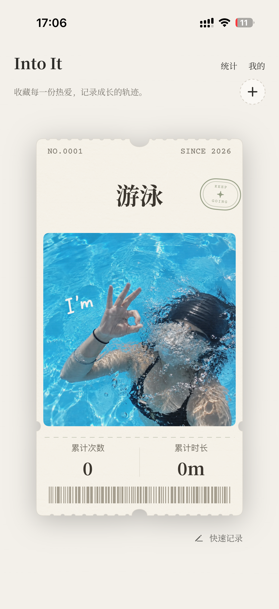
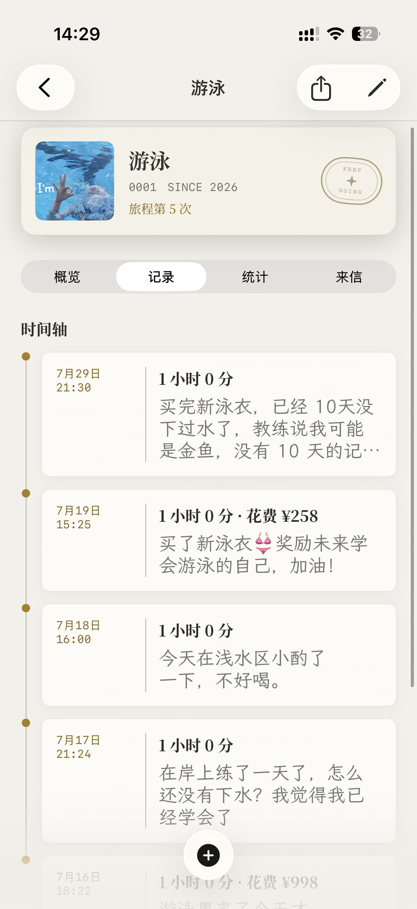
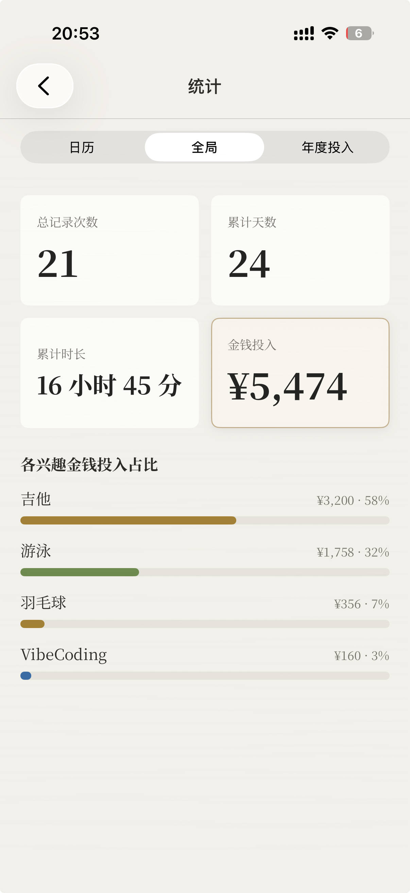

项目背景与个人职责
Into It 是已上线的兴趣成长记录 App，面向希望长期记录爱好、回看个人投入与变化的使用者。产品以兴趣档案、记录时间轴和投入统计，承载照片、心得、次数、时长与花费。
我参与产品定位与会员权益设计，负责小红书官方 / 开发者账号的内容运营、用户价值表达和会员活动传播，并结合用户反馈与内容数据开展复盘。
本次运营工作的切入点是产品认知：用户容易将 Into It 理解为打卡或 Habit Tracker，需要用具体的记录结果解释长期价值。
核心价值表达：
把一次次投入，积累成可以回看的兴趣成长档案。

用兴趣票承载一项爱好，把记录对象变得具体。

把照片、心得、时长与花费组织在同一条时间轴。

汇总记录、时间与花费，让长期投入有可回看的结果。
产品页面展示 · 查看 App Store 产品页
用户反馈与使用路径分析
从已有反馈识别两类问题
| 已有反馈 | 问题判断 | 运营回应 |
|---|---|---|
| 容易被理解为打卡工具。 | “记录兴趣”没有说明长期积累后能获得什么。 | 将表达聚焦到兴趣成长档案、时间轴与投入累计。 |
| 用户关注免费会员与永久会员。 | 会员权益是用户进一步了解产品的一个入口。 | 在功能介绍之外增加会员福利传播。 |
上述观察来自已有用户交流与运营反馈，属于定性线索。
按产品功能拆解用户任务
我将产品使用路径拆成四步，用于判断内容应解释什么，以及首次体验应承接什么。以下是基于产品功能的任务分析。
- 01 / 认识产品理解长期记录的用途
看到兴趣成长与投入回顾的具体场景。
- 02 / 建立档案选定一项兴趣
为自己的爱好建立记录对象。
- 03 / 留下记录保存一次真实投入
记录照片、心得、时长或花费。
- 04 / 回看积累查看时间轴与统计
看见多次记录形成的兴趣档案。
这条路径把“用户理解内容”和“用户开始记录”连接起来：内容先展示记录后的结果，再让用户知道一次记录可以留下哪些信息。
运营行动与选择理由
我围绕产品认知、内容场景与会员活动开展内容方向测试。行动顺序优先回应已有反馈，并将抽象定位转成具体内容。
01 / 先调整产品价值表达
用户已有打卡工具的认知偏差，因此先澄清产品用途，再展开功能介绍。
记录你的兴趣
重点落在单次记录，容易被理解为打卡。记录长期兴趣投入与成长
用兴趣档案、时间轴与投入累计解释长期价值。02 / 用“兴趣累充”拆解长期价值
内容围绕次数、时长、花费、照片与心得展开，让用户能把“长期兴趣投入”对应到自己的日常爱好。选择这些维度，是因为它们能由产品的时间轴和统计页面承接。
03 / 用会员福利承接进一步了解
结合用户对免费会员和永久会员的关注，增加免费会员活动传播，并记录社群人数与同期下载表现。福利提供体验入口，产品场景负责解释使用价值。
04 / 结合内容数据复盘
查看曝光、观看、互动与平均观看时长，配合用户反馈判断内容表达。复盘形成的调整方向是更直观地展示记录结果，减少只讲理念的介绍方式。
实际内容表现与活动记录
兴趣累充 · 单篇小红书内容该篇内容后台快照另记录点赞 9、评论 0、分享 2。以上为单篇内容记录。
按该快照计算，收藏数 / 观看数为 13 / 223，约 5.8%。这一比值用于观察内容收藏表现，分母为平台观看数。
会员活动期间的同期记录
| 观察项 | 记录 | 统计说明 |
|---|---|---|
| 社群人数 | 约 2–3 人增加至 73 人 | 按活动相关社群记录列示。 |
| 下载次数 | 2026.09.18 记录 18 次 | 按下载次数列示。 |
两项同期记录分别呈现社群规模与下载表现。现有记录不足以计算社群到下载的转化，或归因活动带来的付费。
产品行为的衡量口径设计
分析设计 · 用于说明运营衡量思路内容的观看与收藏反映传播表现；产品体验还需要关注用户是否开始记录，以及是否继续积累。以下为本案例制定的指标口径，实际已有数据见上一节。
- 首次价值达成率
首次打开后 24 小时内，创建兴趣档案并保存首条记录的新增用户数 ÷ 同批首次打开产品的新增用户数
将首次价值定义为“拥有自己的兴趣档案与第一条记录”，用于观察产品认知是否接到了实际体验。
- 首次记录流程完成率
首次进入记录流程后 24 小时内成功保存首条记录的用户数 ÷ 同批首次进入记录流程、且此前没有保存记录的用户数
定位用户已表达记录意愿后的操作阻力。若这一环节表现较弱，应结合具体步骤排查字段理解、填写与保存问题。
- 7 日内记录复用率
完成首条记录后，第 1–7 个自然日内至少再次保存一条记录的用户数 ÷ 同批首条记录完成用户数
兴趣活动的发生频率存在差异，因此用一周内再次记录观察持续使用，配合具体兴趣类型理解结果。
统计设计：统一去重用户标识、时区与事件定义；前两项仅纳入已满 24 小时观察期的用户，第三项仅纳入完整观察至第 7 日的用户。“记录保存”指成功创建新记录。所需数据为首次打开、档案创建、记录流程进入和记录保存事件。本节是口径设计，未列示埋点实施或指标实测结果。
项目总结与运营判断
| 关键问题 | 本案例的回答 |
|---|---|
| 发现了什么？ | 用户容易将产品理解为打卡工具，长期兴趣成长的价值需要更具体的表达。 |
| 依据是什么？ | 已有用户交流中的认知偏差与会员关注点，以及单篇内容和活动同期记录。 |
| 为什么这样行动？ | 先调整定位表达，再用兴趣累充内容解释场景，用会员福利提供进一步了解的入口。 |
| 实际交付了什么？ | 价值表达调整、小红书内容与会员活动传播，以及对应的内容和活动复盘记录。 |
| 怎样判断后续效果？ | 传播层看内容表现，体验层以首次价值达成、记录完成与再次记录的口径衡量。 |
我的核心运营判断是：长期记录的价值，需要通过积累后的结果来解释。兴趣档案、时间轴与投入统计，是连接产品定位、内容选题和首次体验的共同线索。